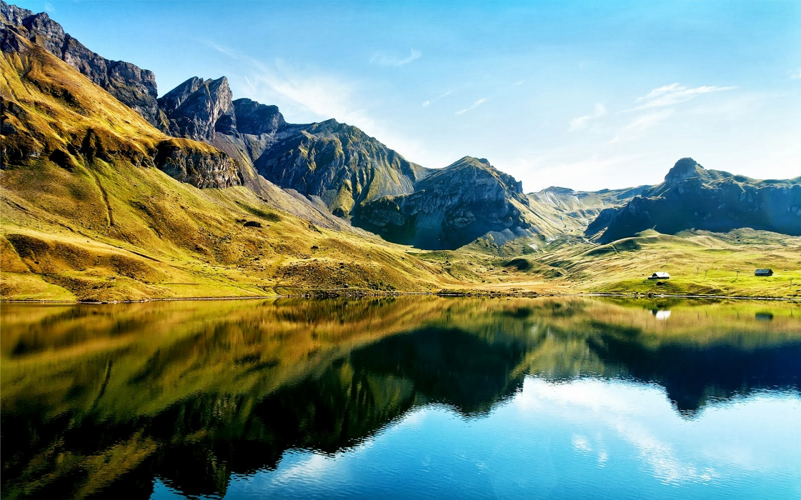
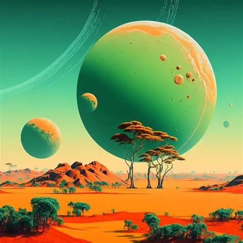

Podemos observar algunas de estas imagenes para comparar las que estan hecha con IA
Informacion sacada de https://cdn.pixabay.com/photo/2021/08/25/20/42/field-6574455_1280.jpg

Tutoriales, demos y novedades sobre IA.
Informacion sacada de https://cdn.pixabay.com/photo/2021/08/25/20/42/field-6574455_1280.jpg

Informacion sacada de https://th.bing.com/th/id/R.ef9903952d0dbcab7f86f3c6278ed1b7?rik=%2fsxGOnhI7VRlzQ&riu=http%3a%2f%2f3.bp.blogspot.com%2f-DpMGtdirhgU%2fUkG0od7SvDI%2fAAAAAAAACas%2fSCmxU02sx5Y%2fs1600%2fim%2525C3%2525A1genes-gratis-para-fondos-y-wallpapers-de-paisajes-motos-piscinas-y-playas-fotos-libres%2b%25252817%252529.jpg&ehk=d2cfs3ur1zvl2pCcCZNfhQxSr9wNkUz3UwLGMPfyfjg%3d&risl=&pid=ImgRaw&r=0


Categorias disponibles